PCA
Classical linear projection. It is stable, interpretable, requires no gradient training, and stores far fewer parameters.
CS 472 Final Project - Taylor Davis and Kaleb Coleman
We compared PCA and fully connected autoencoders under the same latent bottlenecks on MNIST and Fashion-MNIST, then placed diffusion beside the study as a denoising-oriented extension.
High-dimensional images are expensive to store and process. Dimensionality reduction compresses each image into a smaller latent representation, then reconstructs the original image from that code.
Classical linear projection. It is stable, interpretable, requires no gradient training, and stores far fewer parameters.
Nonlinear encoder and decoder trained to compress each 28 x 28 image into a learned latent representation and reconstruct it.
Bonus model. It learns to reverse noise corruption, so it is reported as denoising context rather than a latent-compression winner.
On both MNIST and Fashion-MNIST, AE had higher PSNR at latent sizes 2, 8, 16, and 32.
PCA overtook AE at latent size 64 on both datasets, showing the nonlinear advantage is conditional.
At latent size 2, AE stored about 199.4 times as many parameters as PCA at the same compression ratio.
The diffusion result measures denoising reconstruction from noisy inputs, not compact latent compression.
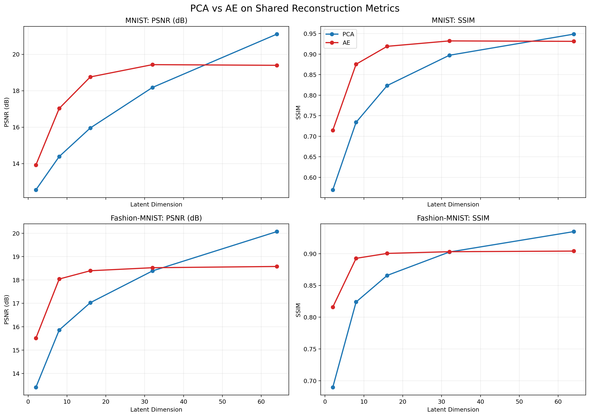
| Dataset | Best AE advantage | PCA advantage at 64 |
|---|---|---|
| MNIST | +2.80 dB at latent 16 | +1.71 dB over AE |
| Fashion-MNIST | +2.18 dB at latent 8 | +1.49 dB over AE |
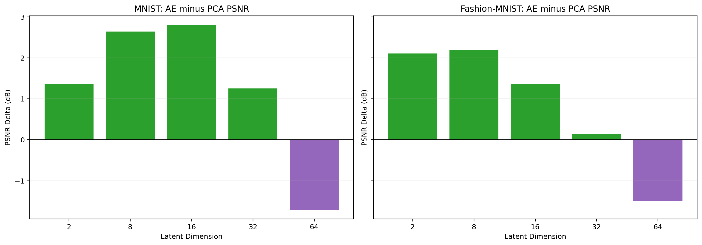
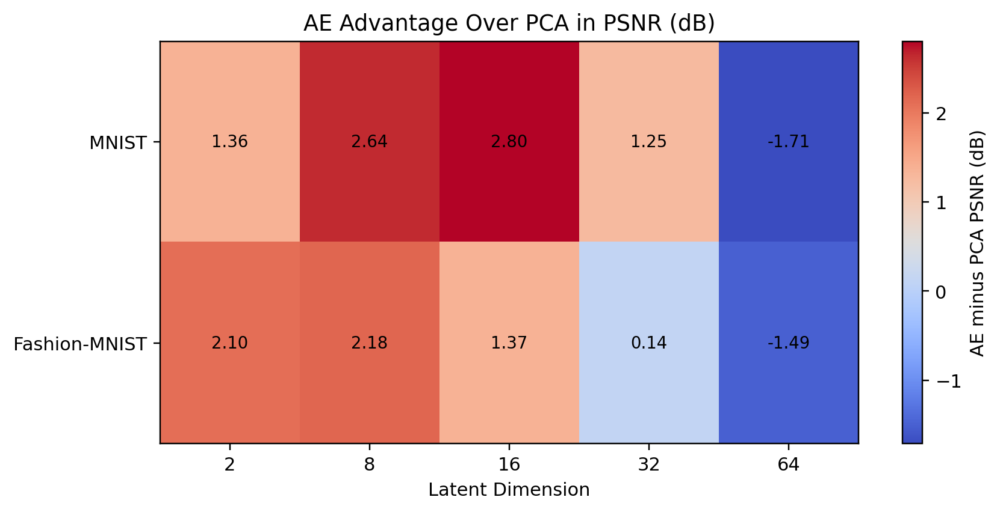
Autoencoders improved reconstruction quality when the bottleneck was tight, but they paid for that flexibility with hundreds of thousands of trainable parameters. PCA needed no neural training and remained extremely competitive as the latent dimension increased.
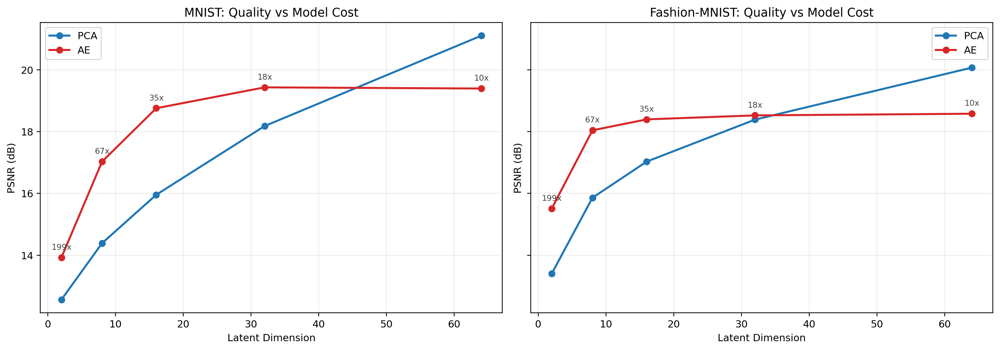
The same-sample grids make the tradeoff visible: AE restores smoother shapes at tight bottlenecks, while PCA becomes sharper again at larger latent sizes.
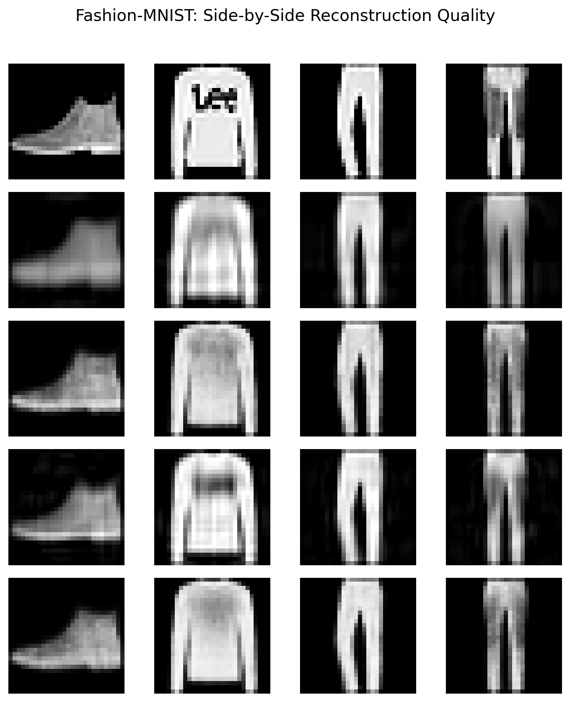
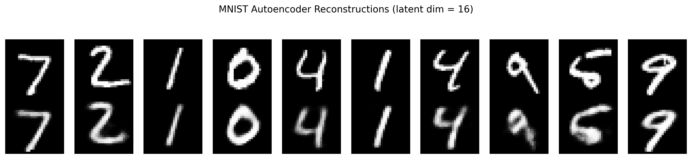
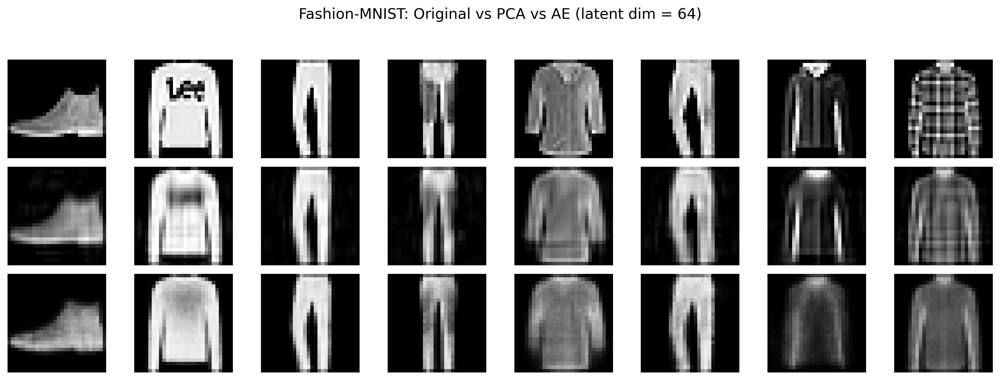
PCA and AE reconstruct after compression into a fixed latent code. Diffusion instead learns to reverse progressive noise corruption. That makes it useful for image restoration and generation, but it is not answering the same winner-or-loser compression question.
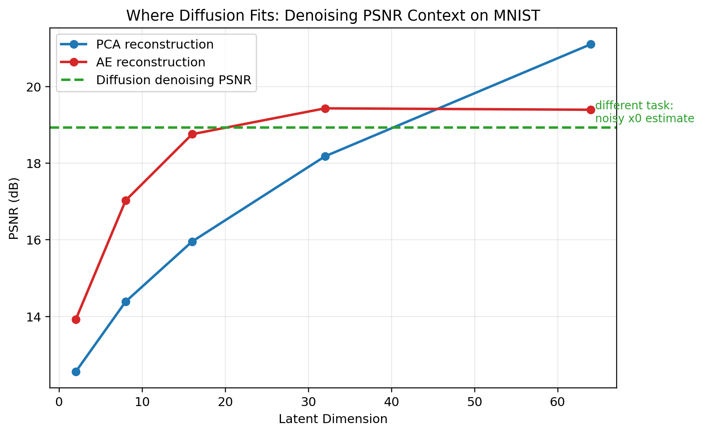
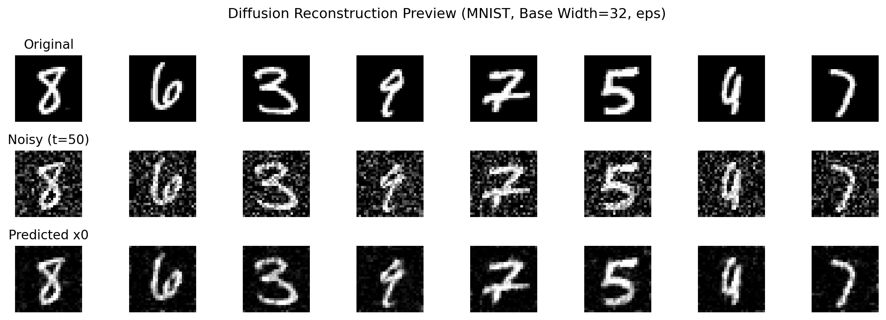
These are the saved diffusion generations, with MNIST displayed at 320 x 320 to match the native CIFAR-10 grid.
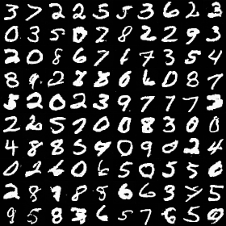
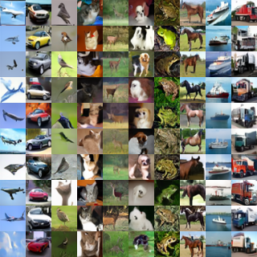
Choose the autoencoder. It gives the strongest PSNR gains at low and middle latent sizes on both datasets.
Choose PCA. It is dramatically smaller, does not require gradient training, and wins again at latent size 64.
Diffusion is the relevant extension, but it should be evaluated as restoration or generation rather than dimensionality reduction.
{kind=link}
{kind=link}
{kind=link}
{kind=link}
{kind=link}
{kind=link}
{kind=link}
{kind=link}
{kind=link}
{kind=link}